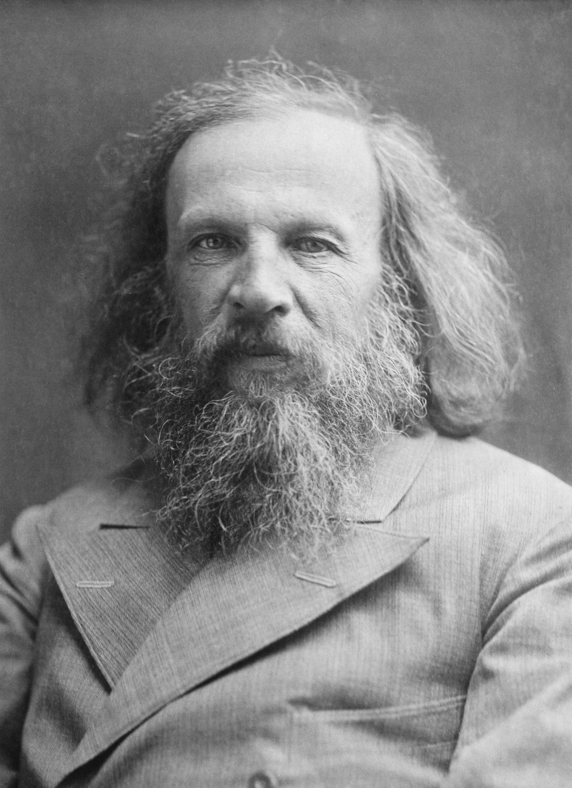

Dmitri Mendeleev

Dmitri Ivanovich Mendeleev (1834–1907) was a Russian chemist and inventor best known for formulating the Periodic Law and creating a farsighted version of the periodic table of elements. His work laid the foundation for modern chemistry and remains one of the greatest intellectual achievements in science.
What is the Periodic Table?
The periodic table is a tabular arrangement of the chemical elements, organized by increasing atomic number, electron configuration, and recurring chemical properties. Elements in the same column (group) share similar chemical behaviours, while elements in the same row (period) have the same number of electron shells.
Historical Background
The periodic table was formally published by Dmitri Mendeleev in 1869. Several chemists had contributed to element classification before him:
- Antoine Lavoisier (1789) — Published the first modern list of elements, separating metals from non-metals.
- Johann Döbereiner (1817) — Noticed triads of elements with similar properties and arithmetic relationships in atomic weights.
- John Newlands (1864) — Proposed the Law of Octaves, observing that every eighth element had similar properties.
- Dmitri Mendeleev (1869) — Arranged all known elements by atomic weight and periodicity, predicting missing elements with remarkable accuracy.
Mendeleev's Key Contributions
- Periodic Law: Elements arranged by atomic weight exhibit periodicity — their properties recur at regular intervals.
- Table Structure: His original 1869 table had 17 columns; revised in 1871 to an 8-group format still recognisable today.
- Prediction of Unknown Elements: He left deliberate gaps for undiscovered elements and accurately predicted their properties — Gallium (1875), Scandium (1879), and Germanium (1886) all confirmed his predictions.
- Correcting Atomic Weights: Mendeleev boldly corrected accepted atomic weights of several elements when they conflicted with the periodic pattern.
Scientific Significance
The periodic table became the central framework of chemistry, guiding decades of research, industrial discovery, and academic education. Mendeleev's work received international acclaim — he was nominated for the Nobel Prize twice and received numerous honorary degrees. His periodic table ultimately transformed chemistry from a collection of isolated observations into a systematic, predictive science.
The Modern Periodic Table
The modern periodic table, based on Henry Moseley's 1913 discovery that atomic number (not atomic weight) governs element properties, contains 118 confirmed elements arranged in 18 groups and 7 periods. It is organized into blocks (s, p, d, f) based on the highest-energy electron subshell, giving chemists immediate insight into bonding behaviour, reactivity, and physical properties of any element at a glance.